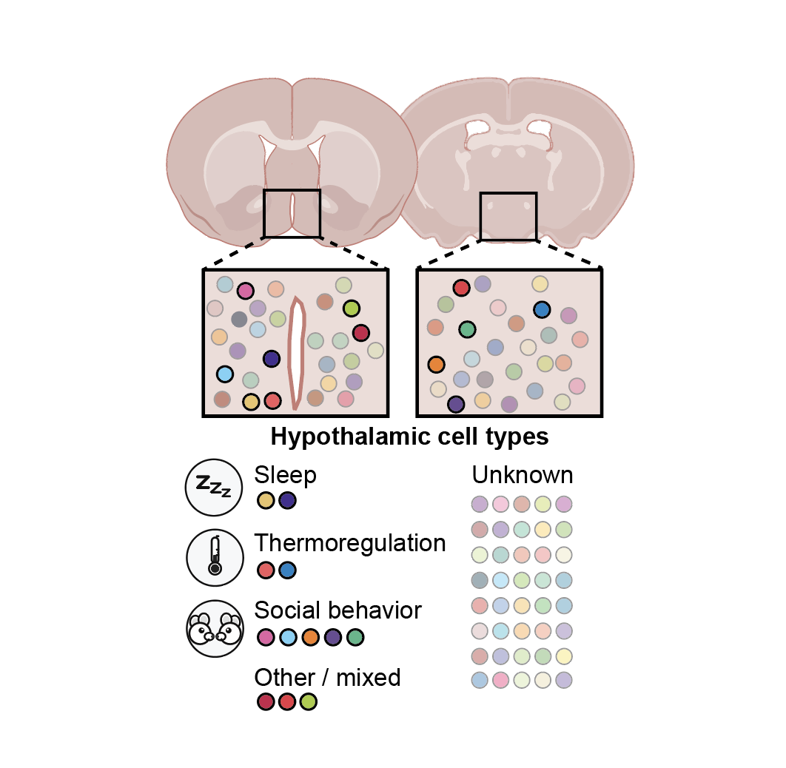

Kaplan Lab
Brain development · Cell type diversity · Naturalistic behavior

The brain does not "wait" until it is fully mature before it functions. Rather, developing neuronal circuits are active, responsive to sensory inputs, and drive behavior, in newborns and even in the womb. We combine molecular and neurophysiological approaches to investigate circuits in the infant brain underlying (1) sleep and (2) social interactions with parents and siblings. Our goal is to understand how the immature brain functions, and how those functions feed back on the brain to affect brain development.
Subcortical brain regions like the hypothalamus and brainstem harbor 1000s of distinct neuronal types. The behavioral and physiological functions of the vast majority of these neuron types are unknown. We develop approaches to target these neuron types in a high-throughput manner, "de-orphan" their functions, and map their connectivity. This helps us understand subcortical circuits underlying behavior and physiology, for example as labeled lines or distributed networks.



Ben Bellanger joins the Kaplan Lab as senior lab technician and lab manager. Welcome, Ben!
Harris Kaplan joins the UVA Department of Biology as Assistant Professor. The lab is located in Gilmer Hall and is actively recruiting graduate students and postdoctoral researchers.
Sensory input, sex, and function shape hypothalamic cell type development
The neurobiology of parenting and infant-evoked aggression
The new frontier in understanding human and mammalian brain development
Brain-immune interactions generate pathogen-specific sickness states
Cell type-specific hormonal signaling configures hypothalamic circuits for parenting
Long-term, high-resolution in vivo calcium imaging in pigeons
Nested neuronal dynamics orchestrate a behavioral hierarchy across timescales
Brain-wide representations of ongoing behavior: a universal principle?
Sensorimotor integration in C. elegans: a reappraisal towards dynamic and distributed computations
Sensorimotor integration for decision making: how the worm steers
Regulation of two motor patterns enables the gradual adjustment of locomotion strategy in C. elegans
Global brain dynamics embed the motor command sequence of Caenorhabditis elegans
Differentially timed extracellular signals synchronize pacemaker neuron clocks
Views of the lab area
.jpeg)
.jpeg)
.jpeg)
.jpeg)